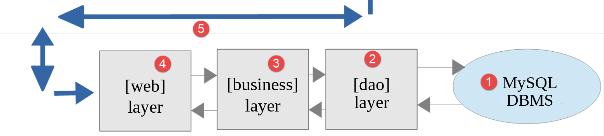
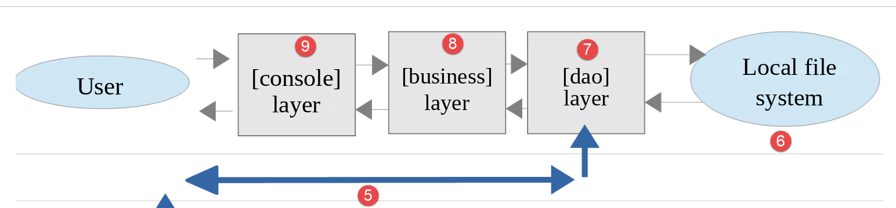
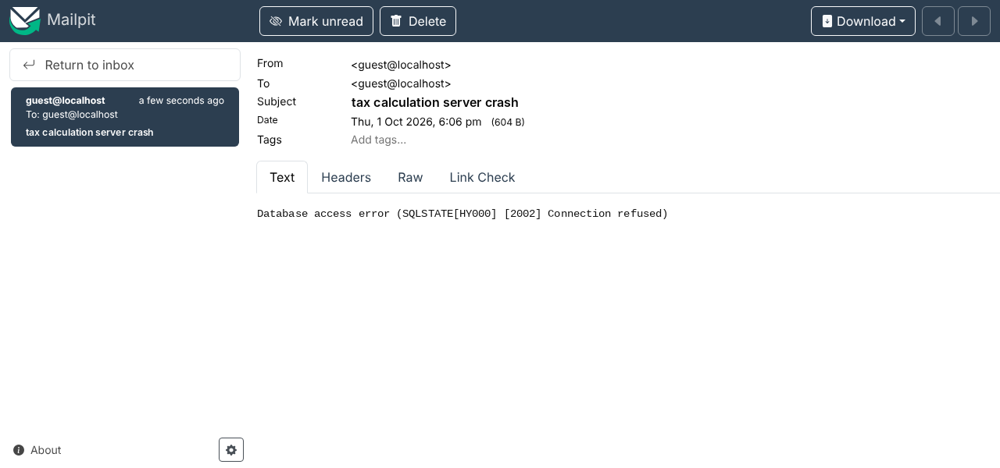

19. Übungsaufgabe – Version 9
In dieser Version verbessern wir den Server wie folgt:
- Derzeit werden bei jeder Anfrage die Daten der Steuerverwaltung aus der Datenbank abgerufen. Wir verwenden eine Session:
- Bei der ersten Anfrage eines Benutzers werden die Daten der Steuerverwaltung aus der Datenbank abgerufen und in der Session gespeichert;
- bei den folgenden Anfragen desselben Benutzers werden die Daten der Steuerverwaltung aus der Session abgerufen. Wir können eine leichte Verbesserung der Ausführungszeit erwarten, da Datenbankabfragen aufwendig sind;
- die Session stellt außerdem sicher, dass der Benutzer nur einmal authentifiziert wird;
- Der Server protokolliert wichtige Ereignisse in einer Textdatei (Logs):
- erfolgreiche oder fehlgeschlagene Authentifizierung;
- ob die vom Client gesendeten Parameter gültig sind;
- das Ergebnis der Steuerberechnung;
- verschiedene Fehlerfälle;
- bei einem schwerwiegenden Fehler wird eine E-Mail an den Administrator der Anwendung gesendet.
Der Client muss ebenfalls angepasst werden, damit er das Session-Cookie verarbeitet, das der Server ihm sendet.
19.1. Der Server
Wir konzentrieren uns auf die Server-Seite der Anwendung.

Diese Architektur wird durch die folgenden Dateien umgesetzt:
| scripts-web/tax/version-09
├── Dao
│ └── ServerDaoWithSession.php
├── Data
│ ├── .htaccess
│ ├── config-server.json
│ └── logs.txt
├── Tests
│ └── ServerDaoTest.php
├── Utilities
│ ├── Logger.php
│ └── SendAdminMail.php
└── tax-server.php
|
Die übrigen Dateien stammen aus den Versionen 5 und 8.
19.1.1. Hilfsklassen
19.1.1.1. Die [Logger]-Klasse
Die Klasse [Logger] dient dazu, Logs in eine Textdatei zu schreiben:
| <?php
declare(strict_types=1);
// Namespace
namespace Application;
// ein Log in einer Textdatei
final readonly class Logger
{
// Konstruktor: die Logdatei wird erstellt, falls sie nicht existiert
public function __construct(private string $logsFilename)
{
// wir prüfen, ob in die Datei geschrieben werden kann (Anhängen eines leeren Strings)
if (@file_put_contents($logsFilename, "", FILE_APPEND) === false) {
throw new TaxException("Failed to create the log file [$logsFilename]", 50);
}
}
// Schreiben einer Nachricht in die Logs, der Datum und Uhrzeit vorangestellt werden
public function write(string $message): void
{
$date = (new \DateTimeImmutable())->format("d/m/y H:i:s.v");
// FILE_APPEND: wir schreiben ans Dateiende
// LOCK_EX: die Datei ist während des Schreibens gesperrt
file_put_contents($this->logsFilename, "$date : $message\n", FILE_APPEND | LOCK_EX);
}
}
|
Anmerkungen
- Zeile 9: Die Klasse ist [final] (sie kann nicht abgeleitet werden) und [readonly]: Ihr einziges Attribut, der Name der Logdatei, kann nach der Erzeugung des Objekts nicht mehr geändert werden;
- Zeile 12: Der Konstruktor der Klasse erwartet den Namen der Logdatei als Parameter;
- Zeile 15: Wir prüfen, ob in die Datei geschrieben werden kann, indem wir einen leeren String anhängen. Das Flag [FILE_APPEND] stellt sicher, dass die Datei angelegt wird, falls sie nicht existiert, und dass ihr Inhalt andernfalls erhalten bleibt. Der Operator [@] verhindert, dass PHP im Fehlerfall eine Warnung ausgibt: Den Fehler behandeln wir selbst;
- Zeile 16: Ist der Schreibvorgang fehlgeschlagen, wird eine Ausnahme ausgelöst;
- Zeile 21: Die Methode [write] schreibt die Nachricht [$message] in die Logdatei, versehen mit vorangestelltem Datum und Uhrzeit. Das Format [d/m/y H:i:s.v] legt Tag, Monat und Jahr (jeweils zweistellig) fest, gefolgt von Stunden, Minuten, Sekunden und Millisekunden;
- Zeile 26: Die Funktion [file_put_contents] öffnet die Datei, hängt die Zeile an und schließt sie wieder. Deshalb gibt es keine Methode [close] mehr wie in der PHP-7-Version der Klasse, die die Datei zwischen zwei Schreibvorgängen offen hielt.
Die Serveranwendung kann mehrere Clients gleichzeitig bedienen. Es gibt jedoch nur eine Logdatei für alle. Beim Schreiben in die Datei besteht daher die Gefahr konkurrierender Zugriffe. Der PHP-7-Kurs hat dieses Problem ignoriert. Hier weist das Flag [LOCK_EX] die Funktion [file_put_contents] an, die Datei während des Schreibens zu sperren: Versucht eine andere Anfrage gleichzeitig zu schreiben, wartet sie, bis die Sperre aufgehoben ist. Eine einzelne Logzeile wird deshalb nie mit einer anderen vermischt. Zeilen, die von zwei gleichzeitigen Anfragen geschrieben werden, können jedoch ineinander verschachtelt sein.
19.1.1.2. Die [SendAdminMail]-Klasse
Die Klasse [SendAdminMail] ermöglicht es, im Fall eines Absturzes eine E-Mail an den Administrator der Anwendung zu senden:
| <?php
declare(strict_types=1);
// Namespace
namespace Application;
// Abhängigkeiten von Symfony Mailer
use Symfony\Component\Mailer\Mailer;
use Symfony\Component\Mailer\Transport;
use Symfony\Component\Mime\Email;
// Senden einer E-Mail an den Administrator der Anwendung
final readonly class SendAdminMail
{
// $config: die zum Senden der E-Mail erforderlichen Informationen
// $logger: ein optionales Log, um das Ergebnis des Sendens festzuhalten
public function __construct(private array $config, private ?Logger $logger = null)
{
}
// Senden der Nachricht [$message] an den Administrator
// die Methode wirft keine Exception: ein Fehlschlag beim Senden wird nur in den Logs festgehalten
public function send(string $message): void
{
// die E-Mail wird an den SMTP-Server $this->config["smtp-server"] auf Port $this->config["smtp-port"] gesendet
// von $this->config["from"] an den Empfänger $this->config["to"]
// mit dem Betreff $this->config["subject"] und den Anhängen $this->config["attachments"]
// wenn $this->config["tls"] true ist, ist die Verbindung gesichert und authentifiziert
$config = $this->config;
try {
// Erstellen der Nachricht
$email = (new Email())
->from($config["from"])
->to($config["to"])
->subject($config["subject"])
->text($message);
// Anhänge
foreach ($config["attachments"] as $attachment) {
if (file_exists($attachment)) {
$email->attachFromPath($attachment);
} else {
$this->logger?->write("The attachment [$attachment] does not exist");
}
}
// der Transport der Nachricht
$dsn = "smtp://{$config["smtp-server"]}:{$config["smtp-port"]}";
if ($config["tls"]) {
// sichere (STARTTLS) und authentifizierte Verbindung
$verifyPeer = ($config["verify-peer"] ?? true) ? 1 : 0;
$dsn = sprintf("smtp://%s:%s@%s:%d?require_tls=1&verify_peer=%d",
rawurlencode($config["user"]), rawurlencode($config["password"]),
$config["smtp-server"], $config["smtp-port"], $verifyPeer);
}
// Senden der Nachricht
(new Mailer(Transport::fromDsn($dsn)))->send($email);
$this->logger?->write("Message [$message] sent to {$config["to"]}");
} catch (\Throwable $ex) {
// Fehlschlag beim Senden
$this->logger?->write("Error while sending the message [$message]: {$ex->getMessage()}");
}
}
}
|
Anmerkungen
- Zeilen 9–11: Der PHP-7-Kurs verwendete die Bibliothek [SwiftMailer], die nicht mehr gepflegt wird. Wir verwenden [Symfony Mailer], das im Kapitel über Netzwerkfunktionen vorgestellt wurde;
- Zeile 18: Der Konstruktor erwartet zwei Parameter:
- [$config]: ein assoziatives Array mit allen Informationen, die zum Senden der E-Mail erforderlich sind;
- [$logger]: ein Log, in dem das Ergebnis des E-Mail-Versands festgehalten wird. Dieser Parameter ist optional; sein Standardwert ist [null];
- Zeile 24: Die Methode [send] sendet die Nachricht [$message]. Der Code entspricht dem der Funktion [sendmail] aus dem Skript [smtp-02.php] im Kapitel über Netzwerkfunktionen;
- Zeile 43: Der Null-Safe-Operator [?->] (PHP 8.0) ruft die Methode [write] nur auf, wenn [$this->logger] nicht [null] ist. Er ersetzt den Test [if ($this->logger !== NULL)] im PHP-7-Skript;
- Zeile 58: Die Methode [send] fängt alle Fehler ab: Ein fehlgeschlagener E-Mail-Versand wird lediglich protokolliert. Ein Fehler in der Fehlerbehandlung darf den Server nicht daran hindern, seinem Client zu antworten.
Das assoziative Array [$config] hat die folgende Form:
| "adminMail": {
"smtp-server": "localhost",
"smtp-port": 1025,
"from": "guest@localhost",
"to": "guest@localhost",
"subject": "tax calculation server crash",
"tls": false,
"attachments": []
},
|
Die E-Mail wird an den im Kapitel über Netzwerkfunktionen beschriebenen Server [Mailpit] gesendet, der auf Port 1025 des Rechners [localhost] lauscht und alle empfangenen E-Mails speichert. Er muss gestartet sein (Datei [mailpit.bat] im Ordner [scripts-console/inet/mailpit]).
19.1.2. Die [dao]-Schicht
Die Schicht [dao] in Version 9 wird durch die folgende Klasse [ServerDaoWithSession] implementiert:
| <?php
declare(strict_types=1);
// Namespace
namespace Application;
// eine [dao]-Schicht, die aus bereits erfassten Steuerdaten aufgebaut werden kann
class ServerDaoWithSession extends ServerDao
{
// der Konstruktor erhält:
// - entweder den Namen der JSON-Datei, die die Datenbank beschreibt: die Steuerdaten werden aus der Datenbank gelesen
// - oder die Steuerdaten selbst, bereits erfasst (zum Beispiel in der Session)
public function __construct(string|TaxAdminData $source)
{
if ($source instanceof TaxAdminData) {
// einfachster Fall: die Daten sind bereits da
$this->taxAdminData = $source;
} else {
// wir übergeben an die Elternklasse, die die Datenbank zu nutzen weiß
parent::__construct($source);
}
}
}
|
Anmerkungen
- Zeile 9: Die Klasse [ServerDaoWithSession] in Version 9 erweitert die Klasse [ServerDao] aus Version 8. Das liegt daran, dass die Klasse [ServerDao] die Datenbank verwenden kann. Es bleibt nur der Fall zu behandeln, dass die Daten der Steuerverwaltung bereits abgerufen wurden;
- Zeile 14: Der Konstruktor erhält einen Parameter, der von zwei Typen sein kann. Der Union-Typ [string|TaxAdminData] (PHP 8.0) definiert ihn wie folgt:
- ein String: der Name der Datei mit den Informationen, die für die Verbindung zur Datenbank erforderlich sind, falls die Daten der Steuerverwaltung noch nicht abgerufen wurden;
- ein Objekt [TaxAdminData]: die Daten der Steuerverwaltung, falls sie bereits abgerufen wurden;
- Zeilen 16–18: Der Operator [instanceof] stellt fest, welcher der beiden Typen übergeben wurde. Handelt es sich um Steuerdaten, werden sie im Attribut [taxAdminData] gespeichert, das von der Klasse [ServerDao] geerbt wird. Deshalb wurde dieses Attribut in Version 8 als [protected readonly] deklariert. Die PHP-Klasse in Version 7 hatte einen Konstruktor mit zwei Parametern, von denen einer [NULL] sein musste;
- Zeile 21: Andernfalls wird die Steuerung an den Konstruktor der Elternklasse übergeben, der die Daten aus der Datenbank abruft.
Beim Start einer Websitzung wird die Schicht [dao] mit dem Namen der Datenbankdatei erstellt. Die Daten der Steuerverwaltung werden dann aus der Datenbank abgerufen und in der Session gespeichert. Bei den folgenden Anfragen derselben Session wird die Schicht [dao] mit dem Objekt [TaxAdminData] aus der Session erstellt. Es erfolgt also keine Datenbankabfrage mehr.
19.1.3. Das Serverskript
Das Serverskript [tax-server.php] wird durch die folgende JSON-Datei [config-server.json] konfiguriert:
| {
"databaseFilename": "../version-08/Data/database-mysql.json",
"dependencies": [
"../../../scripts-console/tax/version-05/Entities/TaxException.php",
"../../../scripts-console/tax/version-05/Entities/TaxAdminData.php",
"../../../scripts-console/tax/version-05/Entities/Database.php",
"../../../scripts-console/tax/version-05/Utilities/Utilities.php",
"../version-08/Dao/InterfaceServerDao.php",
"../version-08/Dao/ServerDao.php",
"Dao/ServerDaoWithSession.php",
"../version-08/Business/InterfaceServerBusiness.php",
"../version-08/Business/ServerBusiness.php",
"Utilities/Logger.php",
"Utilities/SendAdminMail.php"
],
"users": [
{
"login": "admin",
"passwd": "admin"
}
],
"adminMail": {
"smtp-server": "localhost",
"smtp-port": 1025,
"from": "guest@localhost",
"to": "guest@localhost",
"subject": "tax calculation server crash",
"tls": false,
"attachments": []
},
"logsFilename": "Data/logs.txt"
}
|
- Zeile 2: Es wird die Beschreibung der MySQL-Datenbank aus Version 8 verwendet;
- Zeilen 3–15: die Dateien aus den Versionen 5 und 8 sowie die drei neuen Dateien von Version 9;
- Zeilen 22–30: die Informationen, die zum Senden einer E-Mail an den Administrator erforderlich sind. Diese haben nun passende JSON-Typen: eine Zahl für den Port, einen Booleschen Wert für [tls]. Die PHP-7-Datei verwendete Strings (["25"], ["FALSE"]);
- Zeile 31: die Logdatei, bezogen auf den Ordner [version-09] des Servers. Sie liegt im Ordner [Data], der durch die Datei [.htaccess] aus Version 8 geschützt ist: Die Logs dürfen nicht für jeden lesbar sein.
Das Serverskript [tax-server.php] ändert sich wie folgt:
| <?php
// strikte Einhaltung der deklarierten Typen der Funktionsparameter und -ergebnisse
declare(strict_types=1);
// Namespace
namespace Application;
// Abhängigkeiten von Symfony
use Symfony\Component\HttpFoundation\JsonResponse;
use Symfony\Component\HttpFoundation\Request;
use Symfony\Component\HttpFoundation\Response;
use Symfony\Component\HttpFoundation\Session\Session;
// PHP-Fehler werden nicht an den Client gesendet (sie gehen in das Log des Webservers)
ini_set("display_errors", "0");
// der Wurzelordner des Servers: die Pfade der Konfigurationsdatei sind relativ zu diesem Ordner
const ROOT_DIRECTORY = __DIR__;
// Pfad der Konfigurationsdatei
const CONFIG_FILENAME = ROOT_DIRECTORY . "/Data/config-server.json";
// wir rufen die Konfiguration ab
$config = json_decode(file_get_contents(CONFIG_FILENAME), true, flags: JSON_THROW_ON_ERROR);
// wir binden die vom Skript benötigten Abhängigkeiten ein
require_once ROOT_DIRECTORY . "/../../../vendor/autoload.php";
foreach ($config["dependencies"] as $dependency) {
require_once ROOT_DIRECTORY . "/$dependency";
}
// Session (nach dem Laden der Klasse [TaxAdminData], von der sich ein Objekt in der Session befinden kann)
$session = new Session();
$session->start();
// Erstellen der Logdatei
try {
$logger = new Logger(ROOT_DIRECTORY . "/" . $config["logsFilename"]);
} catch (TaxException $ex) {
// Fehler 500 ohne Logs - die Meldung darf den Dateibaum des Servers nicht preisgeben
$message = "Failed to create the log file [{$config["logsFilename"]}]";
doInternalServerError($message, $config["adminMail"]);
// erledigt
exit;
}
// 1. Log
$logger->write("---new request");
// wir rufen die aktuelle Anfrage ab
$request = Request::createFromGlobals();
// Authentifizierung nur beim 1. Mal
if (!$session->has("user")) {
// Log
$logger->write("Authentication in progress…");
// die vom Client gesendeten Zugangsdaten (null, wenn er keine gesendet hat)
$requestUser = $request->getUser();
$requestPassword = $request->getPassword();
// ist der Benutzer einer der autorisierten Benutzer?
$found = $requestUser !== null && $requestPassword !== null
&& array_any(
$config["users"],
fn(array $user): bool => $user["login"] === $requestUser && hash_equals($user["passwd"], $requestPassword)
);
if (!$found) {
// nicht gefunden - Code 401
sendResponse(
["error" => "Authentication failed [$requestUser]"],
Response::HTTP_UNAUTHORIZED,
["WWW-Authenticate" => 'Basic realm="Tax calculation server"'],
$logger
);
// erledigt
exit;
}
// wir vermerken in der Session, dass der Benutzer authentifiziert wurde
$session->set("user", $requestUser);
// Log
$logger->write("Authentication successful [$requestUser]");
} else {
// Log
$logger->write("Authentication taken from the session…");
}
// wir haben einen gültigen Benutzer - wir prüfen die empfangenen Parameter
$errors = [];
// wir müssen eine GET-Anfrage mit drei Parametern haben
if ($request->getMethod() !== "GET" || $request->query->count() !== 3) {
$errors[] = "GET method required with only the parameters [married, children, salary]";
}
// der Familienstand
if (!$request->query->has("married")) {
$errors[] = "missing married parameter";
} else {
$married = strtolower(trim($request->query->getString("married")));
if (!in_array($married, ["yes", "no"], true)) {
$errors[] = "invalid married parameter [$married]";
}
}
// die Anzahl der Kinder und das Gehalt: ganze Zahlen >= 0
$values = [];
foreach (["children", "salary"] as $parameter) {
if (!$request->query->has($parameter)) {
$errors[] = "missing $parameter parameter";
continue;
}
$value = trim($request->query->getString($parameter));
if (preg_match('/^\d+$/', $value) !== 1) {
$errors[] = "invalid $parameter parameter [$value]";
} else {
$values[$parameter] = (int) $value;
}
}
// weitere Parameter in der Anfrage?
foreach (array_diff(array_keys($request->query->all()), ["married", "children", "salary"]) as $parameter) {
$errors[] = "invalid parameter [$parameter]";
}
// Fehler?
if ($errors !== []) {
// wir senden den Fehlercode 400 an den Client
sendResponse(["errors" => $errors], Response::HTTP_BAD_REQUEST, [], $logger);
// erledigt
exit;
}
// Log
[$children, $salary] = [$values["children"], $values["salary"]];
$logger->write("valid parameters ['married'=>$married, 'children'=>$children, 'salary'=>$salary]");
// wir haben alles, was wir zum Arbeiten brauchen
// Erstellen der [dao]-Schicht
if (!$session->has("taxAdminData")) {
// die Steuerdaten stammen aus der Datenbank
$logger->write("tax data taken from the database");
try {
// Aufbau der [dao]-Schicht
$dao = new ServerDaoWithSession(ROOT_DIRECTORY . "/" . $config["databaseFilename"]);
// wir legen die Steuerdaten in die Session
$session->set("taxAdminData", $dao->getTaxAdminData());
} catch (TaxException $ex) {
// Fehler 500
doInternalServerError($ex->getMessage(), $config["adminMail"], $logger);
// erledigt
exit;
}
} else {
// die Steuerdaten stammen aus der Session
$dao = new ServerDaoWithSession($session->get("taxAdminData"));
// Log
$logger->write("tax data taken from the session");
}
// Erstellen der [business]-Schicht
$business = new ServerBusiness($dao);
// Steuerberechnung
$result = $business->calculateTax($married, $children, $salary);
// wir geben die Antwort zurück
sendResponse($result, Response::HTTP_OK, [], $logger);
// Ende
exit;
// --------------------------------------------------------------------------
// schwerwiegender Fehler: eine E-Mail an den Administrator und eine 500-Antwort an den Client
function doInternalServerError(string $message, array $adminMail, ?Logger $logger = null): void
{
// die Fehlermeldung eines DBMS-Treibers ist möglicherweise nicht UTF-8-codiert (unter Windows Windows-1252)
if (!mb_check_encoding($message, "UTF-8")) {
$message = mb_convert_encoding($message, "UTF-8", "Windows-1252");
}
// wir senden eine E-Mail an den Administrator
// [SendAdminMail] fängt alle Exceptions ab und protokolliert sie selbst
(new SendAdminMail($adminMail, $logger))->send($message);
// wir senden den Fehlercode 500 an den Client
sendResponse(["error" => $message], Response::HTTP_INTERNAL_SERVER_ERROR, [], $logger);
}
// Senden der HTTP-Antwort an den Client
// $result: das zu sendende Array in der Form ["response" => $result]
// $statusCode: der HTTP-Status der Antwort
// $headers: der Antwort hinzuzufügende HTTP-Header
// $logger: das Log der Anwendung (null, wenn es nicht erstellt werden konnte)
function sendResponse(array $result, int $statusCode, array $headers = [], ?Logger $logger = null): void
{
// die JSON-Antwort
$response = new JsonResponse(null, $statusCode, $headers);
$response->setEncodingOptions(JSON_UNESCAPED_UNICODE | JSON_UNESCAPED_SLASHES | JSON_PRESERVE_ZERO_FRACTION);
$response->setData(["response" => $result]);
// Senden
$response->send();
// Log
$logger?->write($response->getContent());
}
|
Anmerkungen
- Zeile 13: Es wird die Klasse [Session] aus [HttpFoundation] verwendet, die im vorherigen Kapitel vorgestellt wurde;
- Zeile 16: Von PHP erkannte Fehler (Warnungen, schwerwiegende Fehler usw.) werden nicht in dem an den Client gesendeten Dokument angezeigt. Sie würden die vom Client erwartete JSON-Antwort beschädigen. Sie werden im Fehlerprotokoll des Webservers protokolliert (Datei [error.log] von Apache);
- Zeilen 33–34: Eine Session wird gestartet. Dies geschieht, nachdem die Anwendungsdateien geladen wurden: Die Session kann ein Objekt [TaxAdminData] enthalten, und die Klasse [TaxAdminData] muss bekannt sein, wenn PHP die Objekte der Session rekonstruiert;
- Zeilen 37–44: Es wird versucht, die Logdatei zu erstellen. Tritt dabei eine Ausnahme auf, wird die Funktion [doInternalServerError] ohne Log aufgerufen (der letzte Parameter fehlt). Die Fehlermeldung enthält den in der Konfiguration angegebenen Namen der Logdatei: Die Meldung der Ausnahme enthält den vollständigen Pfad der Datei, der dem Client die Ordnerstruktur des Servers verraten würde;
- Zeile 162: Die Funktion [doInternalServerError] akzeptiert drei Parameter:
- [$message]: die Fehlermeldung;
- [$adminMail]: die Informationen, die zum Senden einer E-Mail an den Administrator der Anwendung erforderlich sind;
- [$logger]: das Anwendungslog, sofern es erstellt werden konnte;
- Zeilen 165–166: Die Fehlermeldung kann von einem DBMS-Treiber stammen und nicht in UTF-8 codiert sein (siehe Version 8);
- Zeile 170: Es wird eine E-Mail an den Administrator der Anwendung gesendet;
- Zeile 172: Die Antwort wird mit dem Code [500 Internal Server Error] an den Client gesendet;
- Zeile 180: Die Funktion [sendResponse] sendet alle Antworten an den Client. Ihre Parameter sind:
- [$result]: das zu sendende Array. Der Server sendet den JSON-String des Arrays [["response" => $result]];
- [$statusCode]: der HTTP-Status der Antwort;
- [$headers]: die HTTP-Header, die der Antwort hinzugefügt werden sollen. Das ist beim Header [WWW-Authenticate] in der 401-Antwort der Fall;
- [$logger]: das Anwendungslog;
- Zeile 183: Der Konstruktor der Klasse [JsonResponse] akzeptiert die Daten, den Status und die Header der Antwort. Die Daten werden erst später mit [setData] gesetzt, nachdem die Optionen für [json_encode] gewählt wurden, nämlich die aus Version 8;
- Zeile 189: Die gesendete JSON-Antwort wird protokolliert;
- Zeile 48: der erste Logeintrag für die Anfrage;
- Zeile 53: Dank der eingerichteten Session wird der Client nur einmal authentifiziert:
- Sobald der Client authentifiziert ist, wird der Schlüssel [user] in der Session gespeichert, mit der Benutzerkennung aus Zeile 77 als Wert;
- bei der nächsten Anfrage desselben Clients verhindert die Prüfung eine unnötige erneute Authentifizierung;
- Zeilen 67–72: Schlägt die Authentifizierung fehl, sendet die Funktion [sendResponse] eine 401-Antwort mit dem Header [WWW-Authenticate];
- Zeilen 86–118: Die Validierung der Parameter folgt der Spezifikation von Version 8;
- Zeile 126: Die Array-Destrukturierung [[$a, $b] = [...]] weist beiden Variablen [$children] und [$salary] in einer einzigen Anweisung Werte zu. Sie ersetzt die Funktion [list] aus PHP 7;
- Zeile 131: Dank der Session werden die Daten nur ein einziges Mal aus der Datenbank abgerufen:
- Bei der ersten Anfrage erfolgt die Datenbanksuche in Zeile 136. Die abgerufenen Daten werden dann in Zeile 138 in der Session gespeichert, verknüpft mit dem Schlüssel [taxAdminData] ;
- bei den folgenden Anfragen wird der Schlüssel [taxAdminData] in der Session gefunden, und die Steuerdaten werden in Zeile 147 direkt an die Schicht [dao] übergeben;
- Zeilen 139–143: Die Suche nach den Steuerdaten in der Datenbank kann fehlschlagen. In diesem Fall wird ein Code [500 Internal Server Error] an den Client gesendet und eine E-Mail an den Administrator geschickt;
- Zeile 156: Der restliche Code entspricht der vorherigen Version, wobei die Antwort von der Funktion [sendResponse] gesendet wird.
Beachten Sie, dass die Funktionen [doInternalServerError] und [sendResponse] am Ende des Skripts nach der Anweisung [exit] definiert sind: PHP kennt alle auf oberster Ebene einer Datei definierten Funktionen, bevor es die erste Anweisung dieser Datei ausführt.
19.1.4. [PHPUnit]-Tests
Wir testen nur die Schicht [dao], die als einzige geändert wurde. Der Testcode für [Tests/ServerDaoTest.php] lautet wie folgt:
| <?php
// strikte Einhaltung der deklarierten Typen der Funktionsparameter und -ergebnisse
declare(strict_types=1);
// Namespace der Tests
namespace Application\Tests;
// die getestete Klasse
use Application\ServerDaoWithSession;
// die PHPUnit-Klassen
use PHPUnit\Framework\TestCase;
final class ServerDaoTest extends TestCase
{
// der Wurzelordner des Servers
private const string ROOT_DIRECTORY = __DIR__ . "/..";
// die Konfiguration des Servers
private static array $config;
// einmal vor dem ersten Test der Klasse ausgeführt
#[\Override]
public static function setUpBeforeClass(): void
{
// wir rufen die Konfiguration des Servers ab
self::$config = json_decode(file_get_contents(self::ROOT_DIRECTORY . "/Data/config-server.json"), true, flags: JSON_THROW_ON_ERROR);
// wir binden die Abhängigkeiten des Servers ein
foreach (self::$config["dependencies"] as $dependency) {
require_once self::ROOT_DIRECTORY . "/$dependency";
}
}
// die aus der Datenbank gelesenen Daten der Steuerverwaltung (1. Anfrage einer Session)
public function testTaxAdminData(): void
{
// Erstellen der [dao]-Schicht aus der Datei, die die Datenbank beschreibt
$dao = new ServerDaoWithSession(self::ROOT_DIRECTORY . "/" . self::$config["databaseFilename"]);
$taxAdminData = $dao->getTaxAdminData();
// Berechnungskonstanten
$this->assertSame(1551.0, $taxAdminData->halfShareQfCeiling);
$this->assertSame(21037.0, $taxAdminData->singleIncomeCeilingForReduction);
$this->assertSame(42074.0, $taxAdminData->coupleIncomeCeilingForReduction);
$this->assertSame(3797.0, $taxAdminData->halfShareReductionValue);
$this->assertSame(1196.0, $taxAdminData->singleDiscountCeiling);
$this->assertSame(1970.0, $taxAdminData->coupleDiscountCeiling);
$this->assertSame(1595.0, $taxAdminData->singleTaxCeilingForDiscount);
$this->assertSame(2627.0, $taxAdminData->coupleTaxCeilingForDiscount);
$this->assertSame(12502.0, $taxAdminData->tenPercentAllowanceMax);
$this->assertSame(437.0, $taxAdminData->tenPercentAllowanceMin);
// Steuerstufen
$this->assertSame([9964.0, 27519.0, 73779.0, 156244.0, 0.0], $taxAdminData->limits);
$this->assertSame([0.0, 0.14, 0.30, 0.41, 0.45], $taxAdminData->coeffR);
$this->assertSame([0.0, 1394.96, 5798.0, 13913.69, 20163.45], $taxAdminData->coeffN);
}
// die bereits erfassten Daten der Steuerverwaltung (folgende Anfragen der Session)
public function testTaxAdminDataInSession(): void
{
// die bei der 1. Anfrage aus der Datenbank gelesenen Daten
$databaseFilename = self::ROOT_DIRECTORY . "/" . self::$config["databaseFilename"];
$taxAdminData = (new ServerDaoWithSession($databaseFilename))->getTaxAdminData();
// Erstellen der [dao]-Schicht aus diesen Daten, wie bei den folgenden Anfragen der Session
$dao = new ServerDaoWithSession($taxAdminData);
// die [dao]-Schicht gibt dasselbe Objekt zurück, ohne auf die Datenbank zuzugreifen
$this->assertSame($taxAdminData, $dao->getTaxAdminData());
}
}
|
- Zeilen 23–31: Wir erstellen eine Laufzeitumgebung, die mit der des Serverskripts [tax-server.php] identisch ist;
- Zeile 37: Zum Aufbau der Schicht [dao] wird die Klasse [ServerDaoWithSession] mit dem Namen der Datenbankdatei instanziiert. Der Test überprüft dann Version 8;
- Zeilen 57–65: Ein zweiter Test überprüft den Aufbau der Schicht [dao] mit bereits abgerufenen Steuerdaten: Die Schicht [dao] muss dasselbe Objekt zurückgeben, was durch [assertSame] geprüft wird.
Die Testergebnisse sehen wie folgt aus:
| > php vendor/bin/phpunit scripts-web/tax/version-09/Tests --testdox
PHPUnit 12.5.37 by Sebastian Bergmann and contributors.
Runtime: PHP 8.5.11
Configuration: .../php8-oct-2026/phpunit.xml
.. 2 / 2 (100%)
Time: 00:00.004, Memory: 16.00 MB
Server Dao (Application\Tests\ServerDao)
✔ Tax admin data
✔ Tax admin data in session
OK (2 tests, 14 assertions)
|
19.2. Der Client
Wir konzentrieren uns auf den Client-Teil der Anwendung.

Diese Architektur wird durch die folgenden Dateien umgesetzt:
| scripts-console/tax/version-09
├── Dao
│ └── ClientDao.php
├── Data
│ ├── config-client-ko.json
│ ├── config-client.json
│ ├── errors.json
│ ├── results.json
│ └── taxpayersdata.json
├── Main
│ └── MainTaxClient.php
└── Tests
└── ClientBusinessTest.php
|
In der neuen Version ändert sich nur Folgendes:
- die Konfigurationsdatei [config-client.json];
- die Clientschicht [dao].
Das Skript [MainTaxClient.php] ist das aus Version 8.
19.2.1. Die [dao]-Schicht
Die Schicht [dao] hat sich wie folgt geändert:
| <?php
declare(strict_types=1);
// Namespace
namespace Application;
// Abhängigkeiten von Symfony
use Symfony\Component\HttpClient\HttpClient;
use Symfony\Contracts\HttpClient\Exception\ExceptionInterface;
use Symfony\Contracts\HttpClient\HttpClientInterface;
// die [dao]-Schicht des Clients: ein HTTP-Client des Steuerberechnungsservers, der eine Session verwaltet
class ClientDao implements InterfaceClientDao
{
// der Trait aus Version 5 implementiert die Methoden [getTaxPayersData] und [saveResults] des Interfaces
use TraitDao;
// der HTTP-Client
private readonly HttpClientInterface $httpClient;
// das Session-Cookie (null, solange der Server es nicht gesendet hat)
private ?string $sessionCookie = null;
// Konstruktor
// $urlServer: die URL des Steuerberechnungsservers
// $user: der Benutzer, der die Anfragen stellt, Array [login, passwd]
// $httpClientOptions: zusätzliche Optionen des HTTP-Clients (verify_peer, verify_host...)
public function __construct(
private readonly string $urlServer,
#[\SensitiveParameter] private readonly array $user,
array $httpClientOptions = [],
) {
// der HTTP-Client: die Zugangsdaten des Benutzers werden nur mit der 1. Anfrage gesendet
$this->httpClient = HttpClient::create($httpClientOptions);
}
// Steuerberechnung durch den Server
#[\Override]
public function calculateTax(string $married, int $children, int $salary): array
{
// die Optionen der Anfrage: die vom Server erwarteten Parameter
$options = [
"query" => [
"married" => $married,
"children" => $children,
"salary" => $salary,
],
];
if ($this->sessionCookie === null) {
// noch keine Session: wir senden die Zugangsdaten des Benutzers
$options["auth_basic"] = [$this->user["login"], $this->user["passwd"]];
} else {
// wir senden das Session-Cookie: der Benutzer ist in dieser Session bereits authentifiziert
$options["headers"] = ["Cookie" => $this->sessionCookie];
}
try {
// wir stellen die Anfrage an den Server
$response = $this->httpClient->request("GET", $this->urlServer, $options);
// der Status, die Header und das JSON-Dokument der Antwort, auch im Fehlerfall (Parameter false)
$statusCode = $response->getStatusCode();
$headers = $response->getHeaders(false);
$json = $response->getContent(false);
} catch (ExceptionInterface $ex) {
// der Server war nicht erreichbar
throw new TaxException("Error communicating with the server ({$ex->getMessage()})", 40, $ex);
}
// Logs
// print "$json\n";
// der Server sendet den JSON-String eines Arrays ["response" => etwas]
try {
$serverResponse = json_decode($json, true, flags: JSON_THROW_ON_ERROR)["response"] ?? null;
} catch (\JsonException $ex) {
$serverResponse = null;
}
if (!is_array($serverResponse)) {
throw new TaxException("Invalid server response [$json]", 41);
}
// Fehler?
if ($statusCode !== 200) {
// wir werfen eine Exception, deren Nachricht die um ihren HTTP-Status ergänzte Antwort des Servers ist
$message = json_encode(
["HTTP status" => $statusCode] + $serverResponse,
JSON_UNESCAPED_UNICODE | JSON_UNESCAPED_SLASHES | JSON_THROW_ON_ERROR
);
throw new TaxException($message, 42);
}
// wir rufen das Session-Cookie ab, falls es noch nicht bekannt ist
if ($this->sessionCookie === null) {
foreach ($headers["set-cookie"] ?? [] as $cookie) {
if (preg_match('/^PHPSESSID=(.+?);/', $cookie, $fields) === 1) {
$this->sessionCookie = "PHPSESSID=$fields[1]";
}
}
}
// wir geben die Antwort zurück: das Array [tax, surcharge, discount, reduction, rate]
return $serverResponse;
}
}
|
Anmerkungen
Die Änderung der Schicht [dao] betrifft nun die Verwaltung einer Session:
- Zeile 22: das Session-Cookie. Sein Wert ist [null] , bis der Server es sendet. Dieses Attribut ist nicht [readonly]: Sein Wert ändert sich nach der ersten Anfrage;
- Zeile 30: Die Anmeldedaten des Benutzers werden nun in einem Attribut gespeichert, da sie nicht mehr bei jeder Anfrage gesendet werden;
- Zeile 34: Der HTTP-Client wird ohne die Option [auth_basic] erstellt;
- Zeilen 49–51: Bei der ersten Anfrage existiert das Cookie noch nicht; die Anfrage wird daher zusammen mit den Authentifizierungsinformationen an den Server gesendet. Die Option [auth_basic] ist nun Teil der Anfrage selbst und nicht mehr des HTTP-Clients;
- Zeilen 52–55: Bei den folgenden Anfragen ist das Session-Cookie normalerweise vorhanden. In diesem Fall werden die Authentifizierungsinformationen nicht gesendet; stattdessen wird das Cookie im HTTP-Header [Cookie] gesendet;
- Zeile 61: Wir rufen die Header der Antwort ab. Wie bei [getContent] verhindert der Parameter [false] eine Ausnahme, wenn der Status der Antwort einen Fehler anzeigt;
- Zeilen 88–94: Die Antwort des Servers auf die erste Anfrage enthält ein Session-Cookie in einem Header [Set-Cookie]. Wir rufen es ab, wie im vorherigen Kapitel beschrieben, und speichern es im Attribut [$sessionCookie].
Wir hätten die alte Version der Schicht [dao] beibehalten und die Authentifizierung bei jeder Anfrage durchführen können, da der Aufwand dafür vernachlässigbar ist. Aus didaktischen Gründen wollten wir jedoch zeigen, wie ein HTTP-Client eine Session verwalten kann.
19.2.2. Die Konfigurationsdatei
Die JSON-Konfigurationsdatei ändert sich wie folgt:
| {
"urlServer": "http://localhost/php8-oct-2026/scripts-web/tax/version-09/tax-server.php",
"user": {
"login": "admin",
"passwd": "admin"
},
"httpClientOptions": {
"verify_peer": false,
"verify_host": false
},
"taxPayersDataFilename": "Data/taxpayersdata.json",
"resultsFilename": "Data/results.json",
"errorsFilename": "Data/errors.json",
"dependencies": [
"../version-05/Entities/TaxException.php",
"../version-05/Entities/TaxPayerData.php",
"../version-05/Utilities/Utilities.php",
"../version-05/Dao/TraitDao.php",
"../version-08/Dao/InterfaceClientDao.php",
"Dao/ClientDao.php",
"../version-08/Business/InterfaceClientBusiness.php",
"../version-08/Business/ClientBusiness.php"
]
}
|
- Zeile 2: die URL des Servers von Version 9;
- Zeilen 14–23: Nur die Schicht [dao] ist neu. Die anderen Dateien stammen aus den Versionen 5 und 8.
19.3. Einige Tests
Für diese Tests müssen der Apache-Server, das DBMS MySQL und der Mailserver [Mailpit] laufen.
19.3.1. Test 1
Zunächst führen wir den Client in einer fehlerfreien Umgebung aus:
| > php MainTaxClient.php
The results have been saved in the file [Data/results.json]
Done
|
Die Ergebnisse entsprechen denen der vorherigen Versionen. Nun gibt es aber auf der Serverseite eine Logdatei namens [Data/logs.txt]:
| 01/10/26 18:08:11.971 : ---new request
01/10/26 18:08:11.972 : Authentication in progress…
01/10/26 18:08:11.972 : Authentication successful [admin]
01/10/26 18:08:11.972 : valid parameters ['married'=>yes, 'children'=>2, 'salary'=>55555]
01/10/26 18:08:11.972 : tax data taken from the database
01/10/26 18:08:11.973 : {"response":{"tax":2814,"surcharge":0,"discount":0,"reduction":0,"rate":0.14}}
01/10/26 18:08:11.976 : ---new request
01/10/26 18:08:11.977 : Authentication taken from the session…
01/10/26 18:08:11.977 : valid parameters ['married'=>yes, 'children'=>2, 'salary'=>50000]
01/10/26 18:08:11.977 : tax data taken from the session
01/10/26 18:08:11.977 : {"response":{"tax":1384,"surcharge":0,"discount":384,"reduction":347,"rate":0.14}}
01/10/26 18:08:11.979 : ---new request
01/10/26 18:08:11.979 : Authentication taken from the session…
01/10/26 18:08:11.979 : valid parameters ['married'=>yes, 'children'=>3, 'salary'=>50000]
01/10/26 18:08:11.980 : tax data taken from the session
01/10/26 18:08:11.980 : {"response":{"tax":0,"surcharge":0,"discount":720,"reduction":0,"rate":0.14}}
…
|
- Zeilen 1–6: Bei der ersten Anfrage erfolgt die Authentifizierung, und die Daten werden aus der Datenbank abgerufen;
- Zeilen 7–11: Bei der nächsten Anfrage erfolgt keine Authentifizierung, und die Daten werden aus der Session abgerufen. Dieses Muster wiederholt sich bei den folgenden Anfragen (ab Zeile 12).
19.3.2. Test 2
Simulieren wir nun wie in Version 8 einen Ausfall des DBMS MySQL (Port 3307 in der Datei [version-08/Data/database-mysql.json]). Auf der Client-Seite erhalten wir die folgende Konsolenausgabe:
| > php MainTaxClient.php
Error no. 42: {"HTTP status":500,"error":"Database access error (SQLSTATE[HY000] [2002] Connection refused)"}
Done
|
Auf der Serverseite sehen wir die folgenden Logs:
| 01/10/26 18:06:48.367 : ---new request
01/10/26 18:06:48.367 : Authentication in progress…
01/10/26 18:06:48.367 : Authentication successful [admin]
01/10/26 18:06:48.367 : valid parameters ['married'=>yes, 'children'=>2, 'salary'=>55555]
01/10/26 18:06:48.367 : tax data taken from the database
01/10/26 18:06:48.450 : Message [Database access error (SQLSTATE[HY000] [2002] Connection refused)] sent to guest@localhost
01/10/26 18:06:48.450 : {"response":{"error":"Database access error (SQLSTATE[HY000] [2002] Connection refused)"}}
|
- Zeile 6: die an den Administrator gesendete E-Mail;
- Zeile 7: die an den Client gesendete Antwort.
Die Weboberfläche von [Mailpit] [http://localhost:8025] zeigt die vom Administrator empfangene E-Mail:

Der PHP-7-Kurs las diese E-Mail mit dem Skript [imap-03.php] aus dem Kapitel über Netzwerkfunktionen. Das ist weiterhin über den POP3-Server von [Mailpit] möglich. Der Tab [Raw] in [Mailpit] zeigt den Klartext der E-Mail an:
| Return-Path: <guest@localhost>
Received: from [127.0.0.1] (localhost [127.0.0.1])
by vm (Mailpit) with SMTP
for <guest@localhost>; Thu, 1 Oct 2026 18:06:48 +0200 (CEST)
From: guest@localhost
To: guest@localhost
Subject: tax calculation server crash
Message-ID: <abc3d7c0b4e68b2d5e70d6710a13a897@localhost>
MIME-Version: 1.0
Date: Thu, 01 Oct 2026 18:06:48 +0200
Content-Type: text/plain; charset=utf-8
Content-Transfer-Encoding: quoted-printable
Database access error (SQLSTATE[HY000] [2002] =
Connection refused)
|
- Zeile 7: Der Betreff enthält nur ASCII-Zeichen und ist deshalb nicht codiert (ein Betreff mit Nicht-ASCII-Zeichen würde gemäß RFC 2047 codiert);
- Zeilen 11–12: Der Text der E-Mail liegt in UTF-8 vor und ist mit [quoted-printable] codiert: Nicht-ASCII-Zeichen würden codiert (zum Beispiel wird [è] zu [=C3=A8]), und das Zeichen [=] am Ende von Zeile 14 zeigt an, dass die Zeile in der nächsten fortgesetzt wird.
19.3.3. Test 3
Sorgen wir nun dafür, dass die Datei [logs.txt] nicht erstellt werden kann. Löschen Sie dazu einfach die Datei [Data/logs.txt] und legen Sie stattdessen einen Ordner namens [Data/logs.txt] an. Führen wir anschließend den Client aus. Auf der Client-Seite erhalten wir die folgende Konsolenausgabe:
| > php MainTaxClient.php
Error no. 42: {"HTTP status":500,"error":"Failed to create the log file [Data/logs.txt]"}
Done
|
Auf der Serverseite gibt es keine Logs, aber der Administrator erhält die folgende E-Mail:
| Return-Path: <guest@localhost>
Received: from [127.0.0.1] (localhost [127.0.0.1])
by vm (Mailpit) with SMTP
for <guest@localhost>; Thu, 1 Oct 2026 18:07:32 +0200 (CEST)
From: guest@localhost
To: guest@localhost
Subject: tax calculation server crash
Message-ID: <4ec9aec48972386b80bbcbb0e2967dfd@localhost>
MIME-Version: 1.0
Date: Thu, 01 Oct 2026 18:07:32 +0200
Content-Type: text/plain; charset=utf-8
Content-Transfer-Encoding: quoted-printable
Failed to create the log file [Data/logs.txt]
|
Anschließend löschen wir den Ordner [Data/logs.txt].
19.3.4. Test 4
Verwenden wir diesmal die Konfiguration [config-client-ko.json], die dem Client falsche Anmeldedaten liefert. Der Client zeigt die folgende Konsolenausgabe an:
| > php MainTaxClient.php config-client-ko.json
Error no. 42: {"HTTP status":401,"error":"Authentication failed [x]"}
Done
|
Auf der Serverseite erscheinen die folgenden Logs:
| 01/10/26 18:07:08.838 : ---new request
01/10/26 18:07:08.838 : Authentication in progress…
01/10/26 18:07:08.839 : {"response":{"error":"Authentication failed [x]"}}
|
19.3.5. Test 5
Rufen wir nun die URL [http://localhost/php8-oct-2026/scripts-web/tax/version-09/tax-server.php] des Servers ohne Parameter auf:
| > curl -u admin:admin http://localhost/php8-oct-2026/scripts-web/tax/version-09/tax-server.php
{"response":{"errors":["GET method required with only the parameters [married, children, salary]","missing married parameter","missing children parameter","missing salary parameter"]}}
|
In der Logdatei [logs.txt] des Servers sehen wir die folgenden Zeilen:
| 01/10/26 18:07:08.894 : ---new request
01/10/26 18:07:08.894 : Authentication in progress…
01/10/26 18:07:08.894 : Authentication successful [admin]
01/10/26 18:07:08.895 : {"response":{"errors":["GET method required with only the parameters [married, children, salary]","missing married parameter","missing children parameter","missing salary parameter"]}}
|
19.4. [PHPUnit]-Tests
Wie bei den vorherigen Versionen führen wir den [PHPUnit]-Test der Schicht [business] des Clients aus, [Tests/ClientBusinessTest.php]. Gegenüber der Testklasse in Version 8 hat sich nichts geändert: Der Test baut seine Umgebung aus der Konfigurationsdatei des Clients von Version 9 auf, die im Ordner [Data] dieser Version liegt.
Die Testergebnisse sehen wie folgt aus:
| > php vendor/bin/phpunit scripts-console/tax/version-09/Tests --testdox
PHPUnit 12.5.37 by Sebastian Bergmann and contributors.
Runtime: PHP 8.5.11
Configuration: .../php8-oct-2026/phpunit.xml
........... 11 / 11 (100%)
Time: 00:00.063, Memory: 16.00 MB
Client Business (Application\Tests\ClientBusiness)
✔ Calculate tax with data set "couple, 2 children, 55555"
✔ Calculate tax with data set "couple, 2 children, 50000"
✔ Calculate tax with data set "couple, 3 children, 50000"
✔ Calculate tax with data set "single, 2 children, 100000"
✔ Calculate tax with data set "single, 3 children, 100000"
✔ Calculate tax with data set "couple, 3 children, 100000"
✔ Calculate tax with data set "couple, 5 children, 100000"
✔ Calculate tax with data set "single, 0 children, 100000"
✔ Calculate tax with data set "couple, 2 children, 30000"
✔ Calculate tax with data set "single, 0 children, 200000"
✔ Calculate tax with data set "couple, 3 children, 200000"
OK (11 tests, 22 assertions)
|
Es lohnt sich, einen Blick auf die Logs des Servers [logs.txt] zu werfen:
| 01/10/26 18:08:07.348 : ---new request
01/10/26 18:08:07.348 : Authentication in progress…
01/10/26 18:08:07.348 : Authentication successful [admin]
01/10/26 18:08:07.348 : valid parameters ['married'=>yes, 'children'=>2, 'salary'=>55555]
01/10/26 18:08:07.348 : tax data taken from the database
01/10/26 18:08:07.349 : {"response":{"tax":2814,"surcharge":0,"discount":0,"reduction":0,"rate":0.14}}
01/10/26 18:08:07.354 : ---new request
01/10/26 18:08:07.354 : Authentication in progress…
01/10/26 18:08:07.354 : Authentication successful [admin]
01/10/26 18:08:07.354 : valid parameters ['married'=>yes, 'children'=>2, 'salary'=>50000]
01/10/26 18:08:07.354 : tax data taken from the database
01/10/26 18:08:07.355 : {"response":{"tax":1384,"surcharge":0,"discount":384,"reduction":347,"rate":0.14}}
01/10/26 18:08:07.359 : ---new request
01/10/26 18:08:07.359 : Authentication in progress…
01/10/26 18:08:07.359 : Authentication successful [admin]
01/10/26 18:08:07.359 : valid parameters ['married'=>yes, 'children'=>3, 'salary'=>50000]
01/10/26 18:08:07.359 : tax data taken from the database
01/10/26 18:08:07.360 : {"response":{"tax":0,"surcharge":0,"discount":720,"reduction":0,"rate":0.14}}
…
01/10/26 18:08:07.397 : ---new request
01/10/26 18:08:07.397 : Authentication in progress…
01/10/26 18:08:07.397 : Authentication successful [admin]
01/10/26 18:08:07.397 : valid parameters ['married'=>yes, 'children'=>3, 'salary'=>200000]
01/10/26 18:08:07.397 : tax data taken from the database
01/10/26 18:08:07.398 : {"response":{"tax":42842,"surcharge":17283,"discount":0,"reduction":0,"rate":0.41}}
|
Wir sehen, dass die Daten der Steuerverwaltung immer aus der Datenbank und nie aus der Session abgerufen werden. Kehren wir zum Code des ausgeführten Tests zurück:
| // wird vor jedem Test ausgeführt
#[\Override]
protected function setUp(): void
{
// Erstellen der [dao]- und der [business]-Schicht wie im Hauptskript
$clientDao = new ClientDao(self::$config["urlServer"], self::$config["user"], self::$config["httpClientOptions"]);
$this->business = new ClientBusiness($clientDao);
}
|
- Zeile 41: Die Methode [setUp] wird vor jedem Test ausgeführt. Für jeden Test wird daher ein neuer [ClientDao] mit einem Session-Cookie [null] erstellt. Das erklärt, warum dieser Client von keiner Session profitiert: Es ist, als würden die 11 Tests von 11 verschiedenen Benutzern durchgeführt.
Dieses Beispiel zeigt, dass die Session nicht der richtige Ort ist, um die Daten der Steuerverwaltung zu speichern. Diese Daten werden nämlich von allen Benutzern der Anwendung gemeinsam genutzt. Hier werden sie jedoch in jeder ihrer Sessions dupliziert.
In der Webprogrammierung gibt es drei Sichtbarkeitsstufen für gemeinsam genutzte Daten:
- Daten, die von allen Benutzern der Webanwendung gemeinsam genutzt werden. Dies sind in der Regel schreibgeschützte Daten. PHP unterstützt diese Art der Speicherung nicht nativ: Jede Anfrage wird von einem Skript ausgeführt, das mit leerem Speicher beginnt;
- Daten, die von den Anfragen desselben Clients gemeinsam genutzt werden. Diese Daten werden in der Session gespeichert. Man spricht von der Client-Session, um den Speicher des Clients zu bezeichnen. Alle Anfragen eines Clients haben Zugriff auf diese Session. Sie können dort Informationen ablegen und lesen. In den bisherigen Skripten wird diese Session durch das Symfony-Objekt [HttpFoundation\Session\Session] umgesetzt;
- der Anfragekontext. Die Anfrage eines Benutzers kann über mehrere aufeinanderfolgende Aktionen verarbeitet werden. Der Anfragekontext ermöglicht es Aktion 1, Informationen an Aktion 2 weiterzugeben. Bei [HttpFoundation] wird die Anfrage durch das Objekt [Request] und ihr Kontext durch dessen Attribut [attributes] umgesetzt.

Es gibt Werkzeuge, um PHP einen Anwendungsspeicher zur Verfügung zu stellen. Die neue Version der Übungsanwendung zeigt den Einsatz eines solchen Werkzeugs.